Devlog Nineteen Overview
This is the final devlog update before the Alpha 1 version release of the game. And I am so happy about that fact. There is still a lot that the game requires. It's still a very much incomplete game. But knowing that the game is this much complete right now is a very good feeling. I'll have a link to a playable version of the game posted on the site when I release this devlog.
This devlog update fixes (at least enough of a fix) some last minute issues I was having, as well as adding in some new tools and upgrading the weapons and tools that were already in the game.
Main Features
Right away I'm going to talk about the most noticable feature of this devlog update. Weapons and tools now have 3D models. This makes them look a lot better than they did before. I'll include some before and after pictures below. I was honestly looking at a way to make every model at least partially 3D, but it's just not worth the effort for how many items I have in the game, and will continue to add.
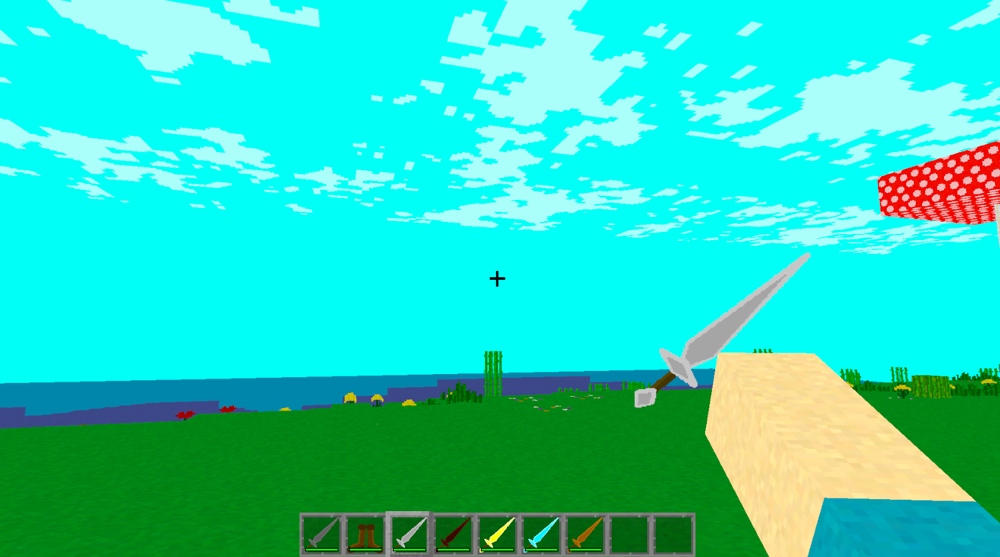

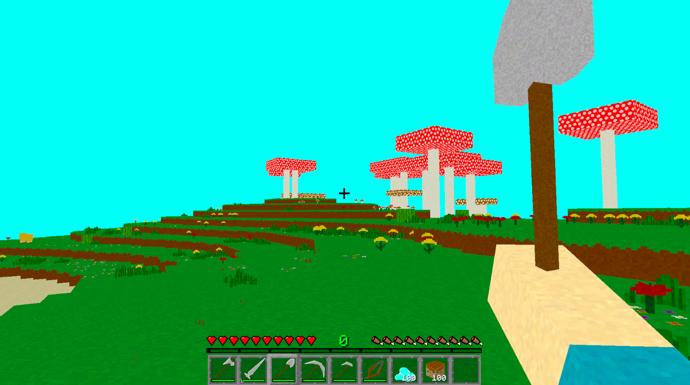
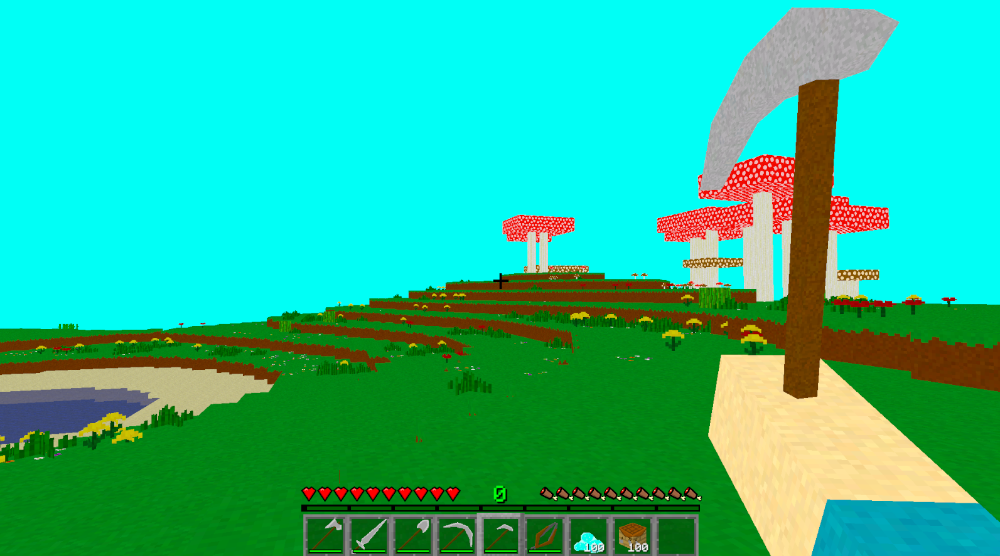
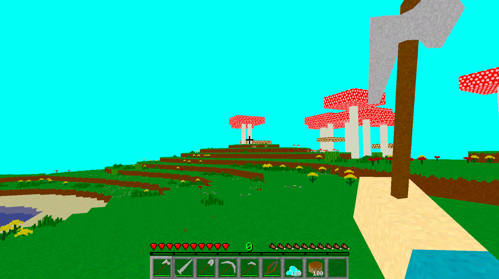
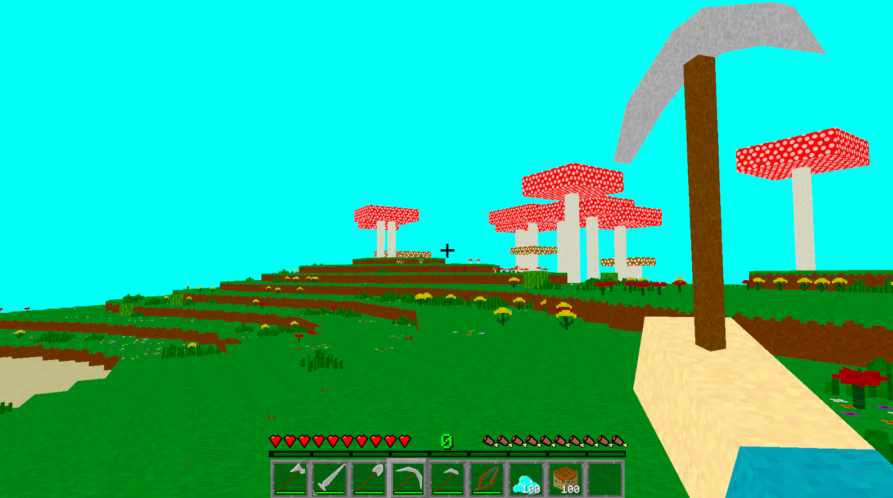
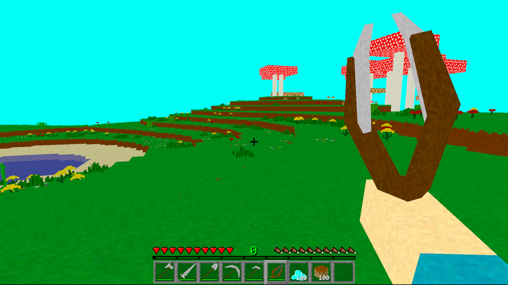
These 3D models also have an animation for when they're being used. To make the game feel more alive. Adding this in has really given me some inspiration for some animation updates for the Alpha 2 version of the game. Like finally adding in some animation for the mobs for instance. Also I know the animation doesn't look the best, but I was having troubles making it look better. Maybe I'm not that great at animations.
Let me talk about a tool I already had in the game before, but now actually does it's intended purpose: Shears. It works just like it does in Minecraft, though currently there isn't much that they can be used for. Currently it's just tree leaves. But at least that gives the player a way to actually get those items in survival mode.
Now let's talk about a new and very exciting new item to the game: Flint and Steel. This item also works basically the exact same way as it does in Minecraft. You click and it creates fire. For the Alpha 1 version of the game the fire is treated as a block with no collision. So you can actually mine it and it does no damage. I was just too lazy to make special code for that for the Alpha 1 version of the game. That's an Alpha 2 version problem. I can say that now. Ha. I was also going to give this item a 3D model, but I just didn't think it'd look that great, so I decided against it last minute.
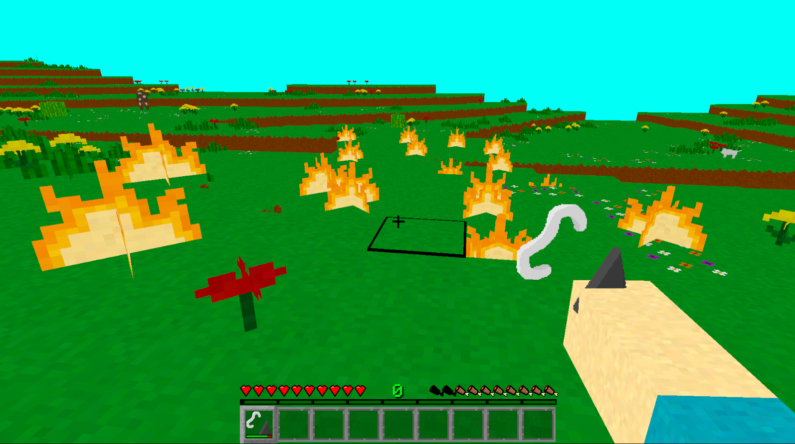
Now let's talk about a few minor changes, but very essential stuff. When the player uses the wrong tool to mine a block, the tool will take two points of durability damage instead of just one. If the player has items in the crafting table or other work stations, the items will go back into the player's inventory. Weapons and tools now have updated durabilities, so diamond tools and wooden tools no longer have the same durability amounts. That one is just something I forgot to add before, and it's kind of funny that I just got around to fixing it now. Pressing E while in any work station will now close that work station. This is just a bunch of small stuff, but it all makes the game feel more consistent and complete.
This final bit is more of a recipe, but it acts as a feature. A friend recommended I add in an item called Diamond Dust, which is just smashed up diamonds. So I'm gonna add the item as a way to repair the durability on weapons, tools, and armour. You put the damaged item in the crafting table, and surround it with diamond dust. Then boom! You have an slightly less damaged item. I'll show off the recipes for this in the recipe section of the page.
Blocks
The only actual block I added in was Fire. The other stuff was only items. Fire will flip between two sprites, giving the simple illusion that the fire is moving. I'll add in a quick video so you can see what the fire looks like.
Recipes
I'm not going to show off too many recipes in this devlog update. But as I've said before: I am going to keep slowly adding them onto the Recipes section of this website.
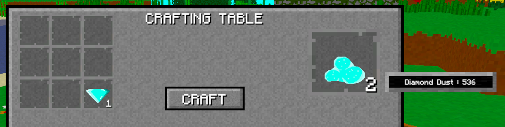
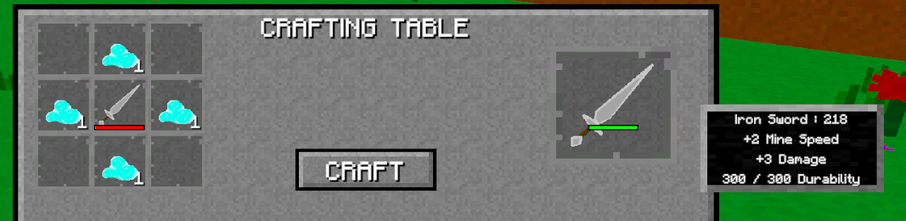
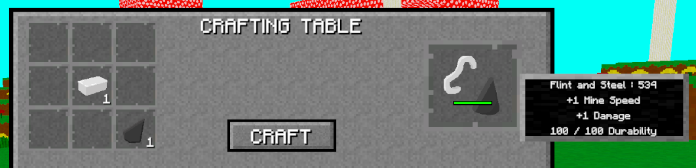
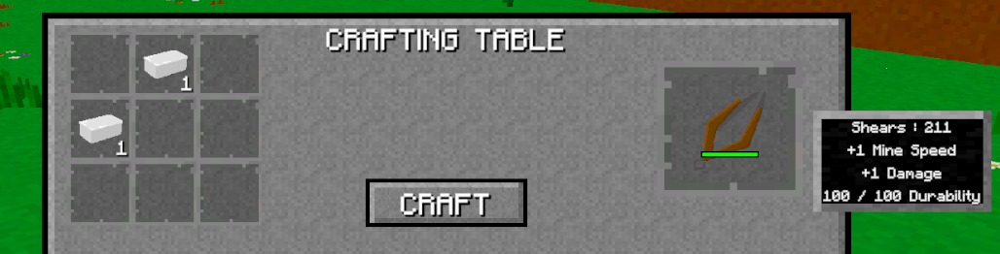
Conclusion
As I said in the Overview of this devlog update, the Alpha 1 version of this game is now complete. I might take a little break from the project now and wait for some feedback and plan the next updates. I did have to temporarilly take a few features out for the Alpha 1 version of the game that weren't good enough for my satisfaction. I just didn't want to push something into the game if it was more than certain going to break something during gameplay. Some of this stuff includes the Red Desert biome, the lighting (every block is max brightness right now), Clouds, and a few more. This stuff works, but there's problems with it, and I know I can make them better given more time. And they're also not essential to gameplay.
Anyways, Alpha 1 is now complete and a link for it will be posted onto the website along with this devlog. In the next few weeks (at least 2) a new devlog update will be posted. That will be when I have had some feedback and some planning for what direction I will take the game.